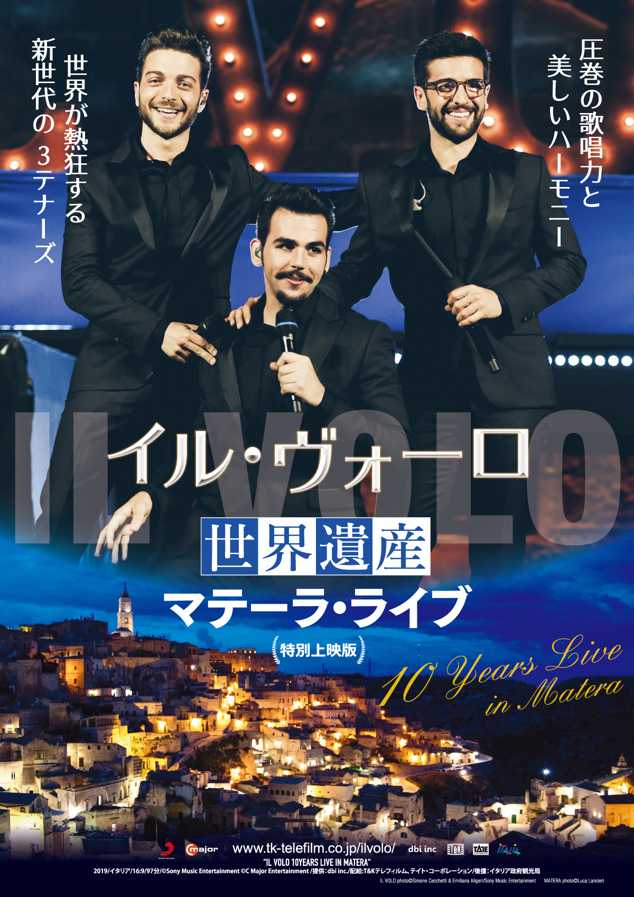

{kind=link}

上演内容
2020年10月2日（金）より Bunkamuraル・シネマ にて
ほか全国順次ロードショー
“３大テノール”の後継者と称され、圧巻の歌唱力と美しいハーモニーで、世界中の
アリーナやスタジアムを満杯にし、日本でも爆発的な人気のイタリアの若きヴォー
カル・トリオ 《イル・ヴォーロ》。昨年映画館で公開され、連日の満席でロング
ラン上映となった、「イル・ヴォーロ with プラシド・ドミンゴ 魅惑のライブ～
３大テノー ルに捧ぐ」に続き、本年 10 月、「イル・ヴォーロ～世界遺産マテーラ・
ライブ」が映画館で公開される。
イタリアの世界遺産マテーラで行った、デビュー１０周年記念の特別コンサートを映像で
世界遺産マテーラの幻想的な夜景と、イル・ヴォーロの美しい歌声が調和した特別な夕べをスクリーンで楽しめる。
プロフィール
【IL VOLO イル・ヴォーロ】
イル・ヴォーロは若き 3 人のイタリア人男性歌手、ジャンルカ・ジノーブレ、イニャツィオ・ボスケット、ピエロ・バロ ーネによるヴォーカル・ユニットで、2009 年に当時 14～15 才だった 3 人が、それぞれソロ歌手としてイタリアの 人気オーディション番組に出演し、「オ・ソーレ・ミオ」を歌って共演したことがきっかけとなって結成された。 2010 年にリリースされた 1ｓｔアルバムは世界的に大ヒット。2012 年には 2nd アルバムをリリース。2015 年にサ ンレモ音楽祭に出場して優勝、3ｒｄアルバムをリリース。2016 年、フィレンツェのサンタ・クローチェ広場に２万人 の大観衆を集め《３大テノール》のプラシド・ドミンゴと共演。そのコンサート映像は日本では 2019 年に映画館で 公開された。2017 年の世界ツアーでは 45 都市 57 公演を行い、25 万人を動員。11 月には初来日公演を行い ソールドアウト。2019 年は結成 10 周年を迎え 4th アルバムをリリース。5 月に 2 度目の来日ツアーを行った。 2020 年には初のベスト・アルバムをリリース。グループ名の IL VOLO とはイタリア語で“飛行”という意味。 圧巻の歌唱力と美しいハーモニーで、オペラのアリ アからポップスまで幅広い楽曲を歌い、３大テノール を継ぐ新世代のヴォーカル・ユニットとして世界的な 人気を獲得している。 フィギュアスケーターによる楽曲使用も有名で、羽生 結弦が 2016～17 年のシーズンエキシビジョンで「星 降る夜（ノッテ・ステラータ）」を使用。エフゲニー・プ ルシェンコが「グランデ・アモーレ」を使用した他、多く のフィギュアスケーターがイル・ヴォーロの曲を使用 している。
上映スケジュール
| 日程 | 上映場所 |
|---|---|
| 2020年10月2日(金)～ | Bunkamura ル･シネマ [東京] |
| 2020年10月10日(土)～ | 名演小劇場 [名古屋] |